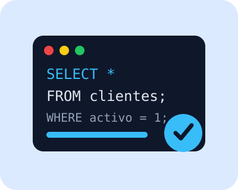

¿Qué es DQL?
DQL significa Data Query Language, que en español se traduce como Lenguaje de Consulta de Datos. Es una parte de SQL que se utiliza para consultar, buscar y recuperar información guardada dentro de una base de datos.
A diferencia de otros lenguajes de SQL, DQL no se usa para crear tablas, modificar estructuras o eliminar datos. Su función principal es mostrar información de acuerdo con las condiciones que indique el usuario.
Idea clave: DQL sirve para hacer preguntas a la base de datos y recibir
respuestas en forma de tablas o resultados.
